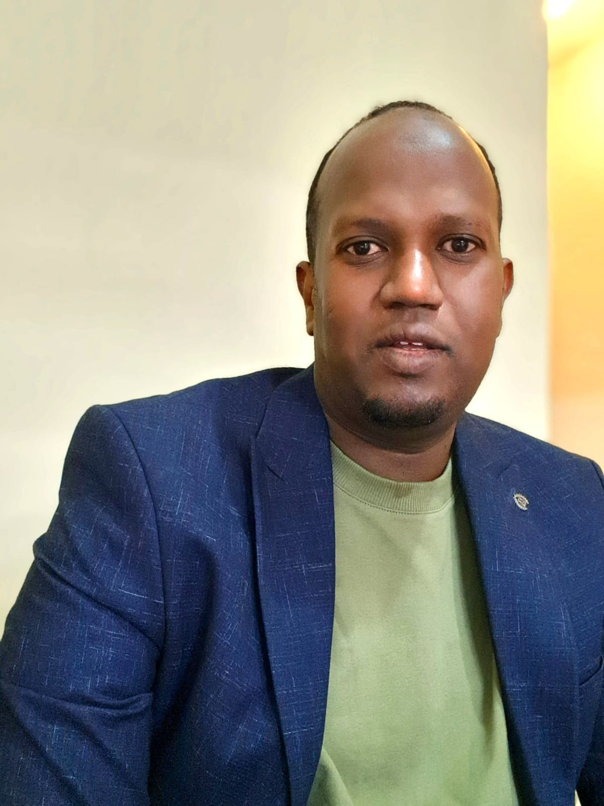

Curriculum Vitae (CV)
Biography
Mohamed Khalif Ali is a PhD student of Computer Engineering, Karabuk University, Turkeye.
He worked as an administrator at Somali International University (SIU),
Faculty of Engineering and Computer Technology, Mogadishu, Somalia.
Mohamed has been a highly qualified academic staff member since 2013.
Researcher in the field of Artificial Intelligence, Networking, Cybersecurity, and Data Science.
ORCID ID: https://orcid.org/0000-0001-7312-1493
Personal Information
- Name: Mohamed Khalif Ali
- Gender: Male
- Date of Birth: 1985
- Place of Birth: Mogadishu, Somalia
- Marital Status: Married
Education
- PhD Candidate at Karabuk University,Turkeye.
- Master of Science in Information Technology (MScIT), Sikkim Manipal University, India, 2013.
- Bachelor of Science in Information Technology (BScIT), SIMAD University, Somalia, 2010.
Work Experience
- Academic Member of Somali International University (SIU).
- Delivered engaging lectures on core computer engineering subjects.
- Supervised student projects and research in areas such as IoT, cybersecurity, and AI.
- Mentored students academically and professionally, contributing to improved performance and career readiness.
Skills
- Programming (Python, Java, C++)
- Web Development (HTML, CSS, JS)
- Network & Security Basics
- Problem Solving
- Research and Data Analysis
References
- Name: Assoc. Prof. Dr. Adib Habbal
- Email: Adib@Karabuk.edu.tr
- Name: Dr. Oğuzhan MENEMENCİOĞLU
- Email: omenemencioglu@karabuk.edu.tr